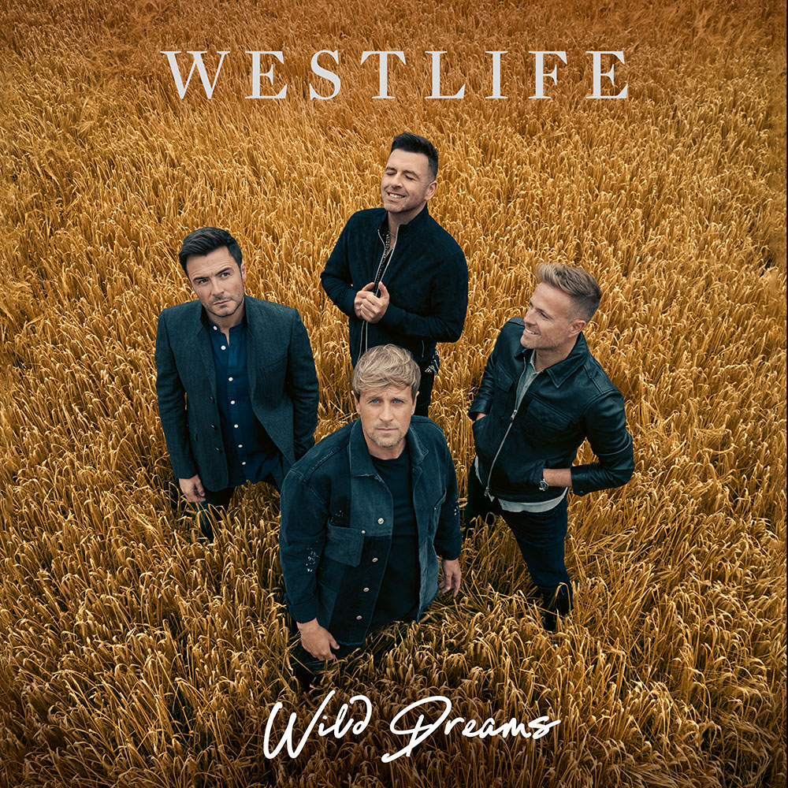

Westlife are an Irish boy band, formed in 1998 in Sligo, Ireland. The group currently consists of members Shane Filan, Markus Feehily, Kian Egan, and Nicky Byrne; one of its original members, Brian McFadden, departed the band in 2004. The group disbanded in 2012 and later reunited in 2018. The group have released eleven studio albums: four as a five-piece and seven as a four-piece. They rose to fame with their debut international self-titled studio album, Westlife (1999). It was followed by Coast to Coast (2000), World of Our Own (2001), Unbreakable – The Greatest Hits Vol. 1 (2002), and Turnaround (2003), which continued the group's success worldwide. The group released their cover albums Allow Us to Be Frank (2004) and The Love Album (2006) and the studio albums Face to Face (2005) and Back Home (2007). After a hiatus of studio recording for almost one year in 2008, they regrouped and released the studio albums Where We Are (2009), and Gravity (2010), and the compilation album Greatest Hits (2011). After eight years, the quartet group released their eleventh studio album, Spectrum, in 2019, followed by their twelfth studio album, Wild Dreams, in 2021.
They are the top act with most Number 1 debuts on the UK Singles Chart, with all 14 of their chart-toppers landing there in their first week.[4] They have the second most certifications for a boy band in the UK Singles Chart after Take That and the most singles certifications for a pop band on the UK number one singles artists chart since The Beatles. According to the British Phonographic Industry (BPI), Westlife has been certified for 13.1 million albums, 1.3 million video albums, and 10.4 million singles, with a total of more than 24 million combined sales in the UK.[5][6] They are also currently ranked 19th with the most number-one albums of all time and sixth highest band in the list.[7] The group have accumulated 14 number-one singles as a lead artist as well as having eight number-one albums in the United Kingdom, making them Ireland's most prolific chart-toppers. In 2012, the Official Charts Company listed Westlife 34th amongst the biggest-selling singles artist, 16th amongst the biggest selling groups, and 14th with most top ten hits all the highest for a boy band and a pop group in British music history.[8] They are also the biggest selling album group of the 2000s decade, with three of their studio albums were part of the 50 fastest selling albums of all time in the UK.[9]